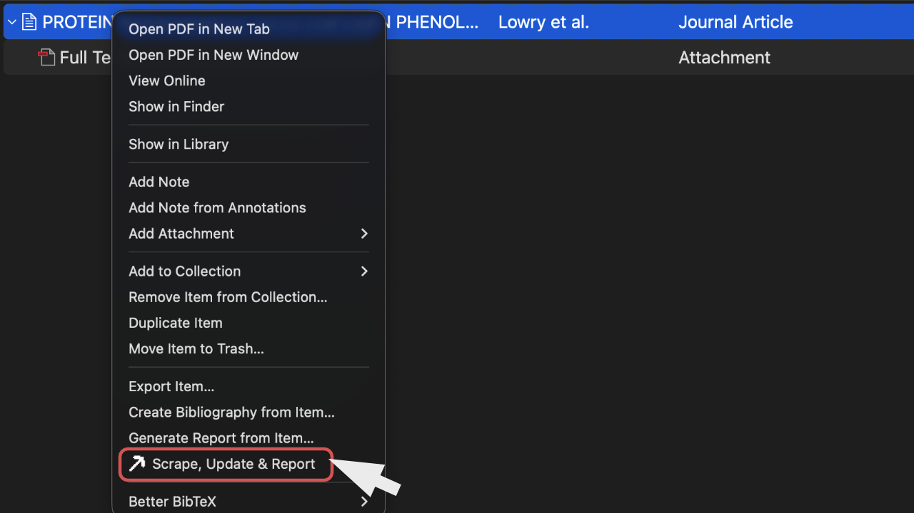
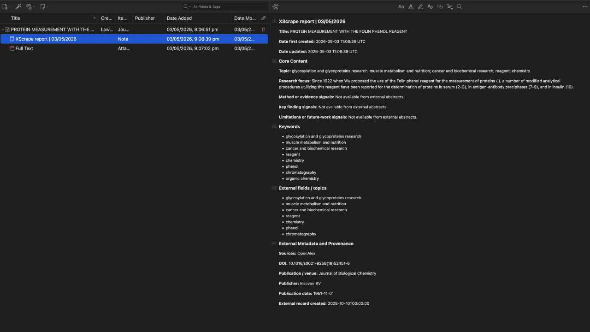
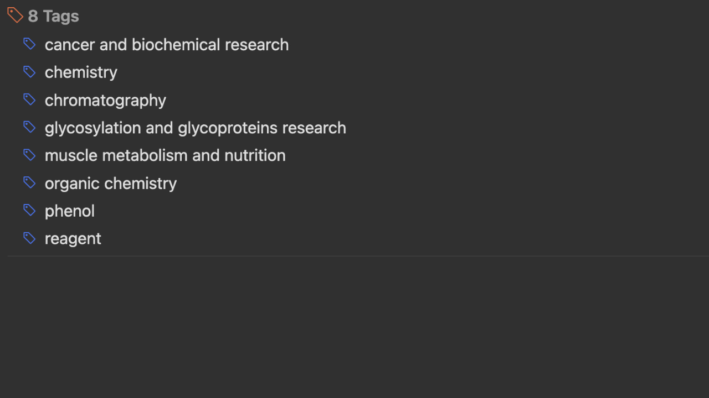

Updates standard fields
Bibliographic metadata goes into Zotero fields such as title, date, DOI, abstract, publisher, and venue.
Zotero plugin
One-click academic metadata updates for Zotero, with safe bibliographic field updates, child scrape report notes, keyword tags, and cross-checking from DBLP, Semantic Scholar, and OpenAlex.
Right-click the Zotero parent item and choose Scrape, Update & Report from the item menu. The plugin creates a child scrape report note, updates safe standard fields, and adds extracted keywords as Zotero tags.



Bibliographic metadata goes into Zotero fields such as title, date, DOI, abstract, publisher, and venue.
Paper-content information and provenance are written into a child note for review and auditability.
DBLP, Semantic Scholar, and OpenAlex records are checked against title, date, and DOI before updates.
.xpi file.scrape-update-report.xpi and restart Zotero if prompted.